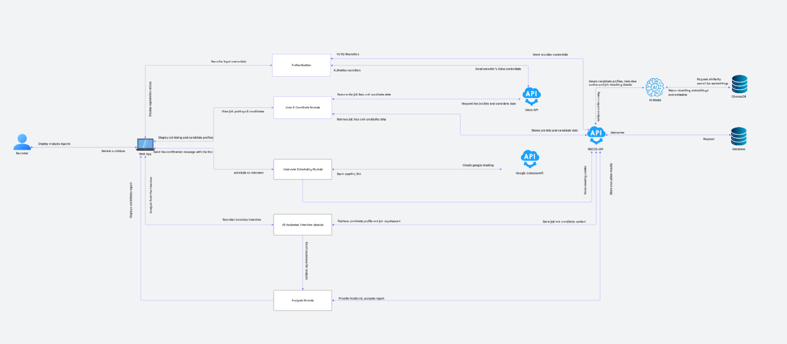
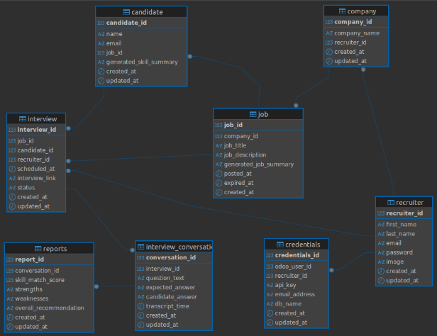

Developer Docs
Comprehensive documentation for developers building, testing, and deploying this platform.
Learn more about the architecture, workflows, best practices, and integration details.
System Architecture

- Frontend: Next.js + Tailwind CSS + TypeScript (deployed on Vercel)
- Backend: Python, Django REST Framework
- Database: PostgreSQL
- Cache: Redis (sessions, verification codes, performance)
- Integrations: Odoo ERP, Google Calendar API, AssemblyAI (transcriptions), Gemini (AI analytics)
- CI/CD: GitHub Actions, Vercel
- Backend Deployment: Heroku (Django app)
- Monitoring: Sentry (error tracking), logging in Django and Vercel dashboards
- Backend Logs: Heroku logs were checked regularly to collect error traces and debug production issues
Database Schema

.env Usage & Secrets Management
- All sensitive values (API keys, secrets) are stored in
.env - Never commit
.envto source control; add it to.gitignore - Use environment variables for config overrides (dev, staging, production)
- For Django, load envs with
python-dotenv - For Next.js, use
process.env.VAR_NAME
Automated Testing
- API endpoints tested with Postman & Jest (frontend API calls)
- Unit tests: Every Django model, serializer, and view (
pytest,unittest) - Frontend tests: React components with
JestandReact Testing Library - Integration tests: API endpoints, user flows (authentication, interview scheduling)
- Test coverage: Generated on CI, reports in PRs
- Commands: ```bash # Backend python manage.py test pytest --cov=backend
# Frontend npm test npm run coverage ```
API Documentation
- Swagger UI: Available at
/api/swaggerin development - Postman Collection:
View Postman Documentation
Coding Standards & Quality
- Linting:
- Frontend:
eslint(npm run lint) - Backend:
black - Formatting:
- Frontend:
prettier(npm run format) - Backend:
black - Type Checking:
- Frontend: TypeScript (
tsc) - Backend:
mypy - Style Guides:
- Next.js Best Practices
- Django REST Framework Style
Branching & PR Workflow
- Branch types:
- Feature branches:
feature/xxx - Bugfix branches:
bugfix/xxx - PR reviews: Required for all merges to
main - Descriptive PR titles & linking issues (use
Fixes #issue_num) - Checklist for PRs:
- [x] All tests pass
- [x] Linting/formatting checks
Directory Structure
frontend/— Next.js app (React components, pages, styles, API calls)backend/— Django project (models, views, serializers, API)docs/— Platform documentation, API reference, developer guidestests/— Backend and frontend tests, fixtures, mocksscripts/— Utility scripts for migration, data seeding, etc.
Running Locally
Setup Steps:
1. Clone repository
bash
git clone https://github.com/your-org/your-repo.git
cd your-repo
2. Copy .env.example to .env and fill all secrets
bash
cp .env.example .env
3. Install dependencies:
- Backend:
bash
pip install -r backend/requirements.txt
python manage.py migrate
- Frontend:
bash
npm install
4. Start servers:
- Backend:
bash
python manage.py runserver
- Frontend:
bash
npm run dev
5. Run tests:
- Backend:
bash
python manage.py test
- Frontend:
bash
npm test
6. Lint and format:
- Backend:
bash
flake8 backend/
black backend/
- Frontend:
bash
npm run lint
npm run format
Deployment
- Frontend: Deploys automatically to Vercel from
main - Backend: Deployed on Heroku. CI/CD pipeline via GitHub Actions.
- Production environment variables: Set up in Vercel (frontend) and in Heroku dashboard for backend
- Database migrations:
bash python manage.py migrate - Heroku Logs:
Regularly check logs using:bash heroku logs --tail --app <your-heroku-app-name>This helps in collecting error traces and debugging production issues.
Monitoring & Logging
- Sentry: Error monitoring for frontend and backend
- Django Logging: Configured via
settings.py - Heroku Logging: Access with
heroku logs --tail - Vercel Logging: Access via Vercel dashboard
Integrations Reference
- Odoo:
- API details, authentication flow
- Example endpoint:
/api/connect-odoo - Google Calendar:
- OAuth setup, event creation, calendar sync
- Endpoint:
/api/google-calendar - AssemblyAI:
- Transcript API usage, webhook setup
- Gemini:
- AI analytics, interview reports
Additional Utilities & Scripts
- Database reset:
bash python manage.py flush - Create superuser:
bash python manage.py createsuperuser - Frontend build:
bash npm run build - API schema export:
bash python manage.py spectacular --file schema.yml